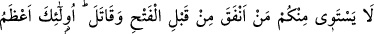
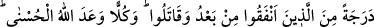

10. Ne oluyor size ki, Allah yolunda harcamıyorsunuz? Halbuki göklerin ve yerin
mîrâsı Allah’ındır. Elbette içinizden, fetihten önce harcayan ve savaşanlar, daha
sonra harcayıp savaşanlara eşit değildir. Onların derecesi, sonradan infak eden ve
savaşanlardan daha yüksektir. Bununla beraber Allah hepsine de en güzel olanı
vâdetmiştir. Allah yaptıklarınızdan haberdârdır.
“Ne oluyor size ki, Allah yolunda harcamıyor sunuz?” Yâni gerçekte Allah’a âid
olan malları O’nun halîfeleri olduğunuz halde, O’nun yakınlığını kazanmak üzere
Allah’ın rızâsı olan yerlere harcamanıza engel olan sebep nedir? Âyette geçen fî
sebîlillâh/Allah yolunda sözü Allah’ın yakınlığını kazanmak için cümlesinin yerine
müsteâr olarak kullanılmıştır. Bazıları da Allah için mânâsında olduğunu söylemişlerdir
“Halbuki göklerin ve yerin mîrâsı Allah’ındır.” Bu cümle âyetteki lâ
tünfikun/harcamıyorsunuz anlamındaki fiilin fâilinin hâli veya hazfedilmiş mef’ûlüdür.
Yâni yaratılmış olan bütün şeyler yok olduktan sonra onlardan size hiçbir şey
kalmayacak hepsi Allah’a kalacak olan bu malları Allah yolunda harcamayı terk
etmenizin sebebi nedir? Böyle olunca, karşılığında sevap ve mükâfât bırakacak tarzda
onları hayır yerlerine sarf etmek elde tutmaktan daha iyidir. Yoksa bedava ve karşılıksız
olarak elinizden çıkacaktır.
Râğıb şöyle demiştir: Sonuçta her şeyin kendisine döneceğinden Allah Teâlâ
kendisini vâris olarak nitelendirmiştir.
Ebü’l-Leys ise, Araplar insanın terk edip gittiği şeylerin mîras olduğunu bildikleri
için âyet-i kerîmede mîras kelimesi zikredilmiş, böylece Allah Teâlâ onlara, tanıyıp
anladıkları bir ifâde ile hitab buyurmuştur.
Bazı büyükler demişlerdir ki, şâyet kalplerde mal sevgisi olmasaydı zekât farz
kılınmazdı. Buradan hareketle bazıları da şöyle demişlerdir: Ârif olanın üzerinde zekât
ya da başkasına âid herhangi bir hak bulunmaz. Gerçi kul namaz ve cünüplükten
temizlenmek ve benzer ibâdetlerle mükellef olduğu gibi zekâtla da mükelleftir. Çünkü o
bilir ki, kendi nefsinde bütün bir âlem mevcuttur. Bu âlem içinde mal sevgisine sâhip
olduğu halde zekâtını ödeyerek bu yönden hakkını yerine getirir ve onu elinden çıkarır.
Bu sebeple bir yönüyle zâhid iken diğer taraftan dünyaya rağbet eden bir başka yönü de
vardır.
Nitekim Peygamberimiz (s.a.) de malının zekâtını vermiştir. Olgun insan odur ki, hem
malın zekâtını vererek hem de zâhid olmaya çalışarak her iki yönü birleştirir. Zira
gerçekte mükellefiyet, mükellefin kendisinden dolayı değil, mükellefte malın
bulunmasındadır. Çünkü mal kendi kendine ayrılıp zekât olamayacağından, mükellef
malının zekâtını ayırmakla mükellef tutulmuştur. Şu halde âriflerde nefisteki her iki